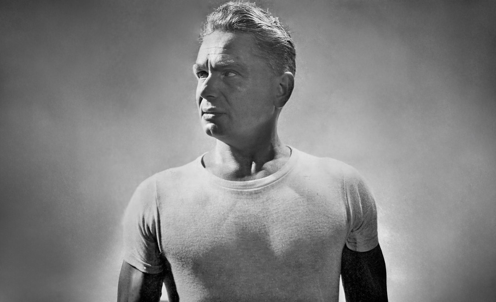
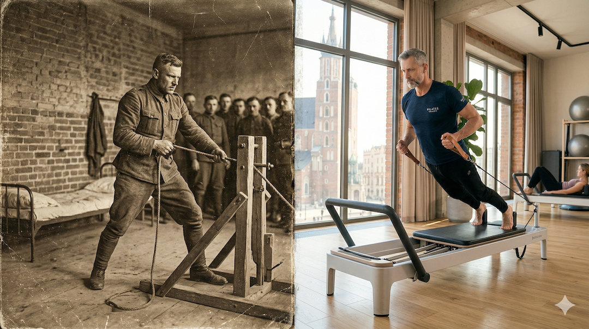
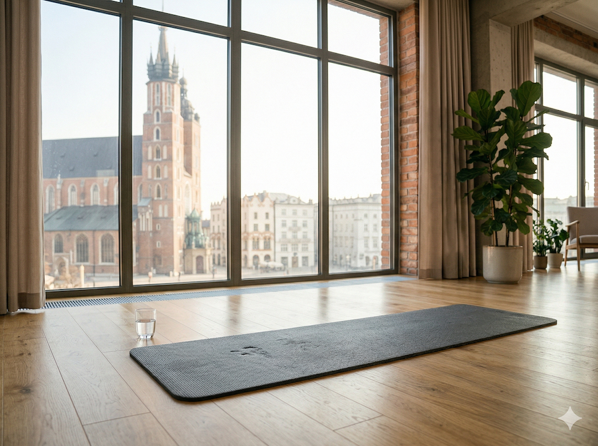

Powiedz słowo „pilates” w towarzystwie kolegów, a zobaczysz uśmieszki. Fioletowe maty, spokojna muzyka, panie w leginsach. Wiadomo.
Problem w tym, że ci sami koledzy po 60-tce będą się skarżyć na plecy, biodra i jakieś problemy z równowagą. A statystyki są brutalne: upadki to pierwsza przyczyna trwałej niepełnosprawności po 65. roku życia. Nie choroba. Nie zawał. Upadki.
Pilates bezpośrednio działa na to, co za te upadki odpowiada. I robi to lepiej niż większość innych metod. Czas skończyć z etykietami.
1. Skąd w ogóle wziął się ten stereotyp — i dlaczego jest błędny
Joseph Pilates urodził się w 1883 roku w Niemczech jako słabe, chorowite dziecko. Reumatyzm, krzywica — klasyczny materiał na kogoś, kto całe życie będzie się oszczędzał. Zamiast tego przez dekady studiował anatomię, gimnastykę i rehabilitację.

Podczas I wojny światowej pracował z internowanymi żołnierzami i ćwiczył ich na improwizowanym sprzęcie. Potem przeniósł się do Nowego Jorku i pracował z tancerzami, bokserami i gimnastykami. Dzisiaj drużyny NFL regularnie włączają pilates do treningu zawodników.
Stereotyp „to trening dla kobiet” to skutek marketingu z lat 80., nie właściwości metody.

MIT vs rzeczywistość
Mit: Pilates to delikatne ćwiczenia dla kobiet, a prawdziwy trening to tylko siłownia.
Rzeczywistość: Reformer i praca z oporem potrafią dać trudną jednostkę siłową. To metoda kontroli, stabilizacji i siły funkcjonalnej.
2. Co się dzieje z ciałem po 50-tce bez stabilizacji głębokiej
Pod warstwą mięśni, które widać w lustrze, jest układ, którego nie widać: mięsień poprzeczny brzucha, wielodzielny, przepona, dno miednicy. To fundament stabilizacji kręgosłupa.
Po latach siedzenia i stresu te mięśnie często są „uśpione”. Ciało kompensuje brak stabilizacji spięciem powierzchownym i stąd biorą się przewlekłe przeciążenia: lędźwie, biodra, kolana.
To jest odwracalne. Dlatego pilates tak dobrze działa u osób wracających do ruchu po 50-tce.
Ciekawostka
W wielu badaniach pierwsze zauważalne zmiany mobilności i kontroli ruchu pojawiają się po około 6 tygodniach regularnej pracy (2 sesje tygodniowo).
3. Upadki, równowaga i liczba, którą warto zapamiętać
WHO podaje to wprost: upadki są jedną z głównych przyczyn urazowej śmiertelności i niepełnosprawności po 65. roku życia. W praktyce oznacza to, że zwykłe potknięcie może uruchomić lawinę problemów zdrowotnych.
Mechanizm jest prosty: spadek propriocepcji, wolniejsza reakcja i słabsza kontrola postawy. Pilates uderza dokładnie w te obszary.
Meta-analizy pokazują duży efekt pilatesu w redukcji ryzyka upadków i poprawie stabilności postawy.
Twarda liczba
Brak regularnego treningu równowagi i stabilizacji zwiększa ryzyko, że drobne potknięcie skończy się poważnym urazem. To nie straszenie, tylko statystyka zdrowotna.
4. Pilates kontra siłownia — to nie jest konkurs
Siłownia i pilates nie wykluczają się. Siłownia buduje siłę i masę mięśniową, pilates poprawia kontrolę ruchu, ustawienie miednicy, pracę oddechu i stabilizację.
W praktyce najwięcej kontuzji bierze się z braku fundamentu technicznego. Pilates ten fundament wzmacnia i dzięki temu trening siłowy jest bezpieczniejszy.
Najlepsze efekty po 50-tce daje połączenie obu podejść, a nie wybór „albo-albo”.
Co to daje w praktyce
Pilates: rdzeń, mobilność, równowaga, propriocepcja.
Siłownia: siła maksymalna, masa mięśniowa, gęstość kości.
Razem: lepsza jakość ruchu i mniejsze ryzyko przeciążeń.
5. Jak zacząć bez błędów, które robi większość ludzi
Najczęstszy błąd to start z YouTube bez korekty techniki. W pilatesie forma jest wszystkim. Zła forma daje słaby efekt albo utrwala złe kompensacje.
Pierwsze 6–10 sesji najlepiej zrobić z instruktorem albo w małej grupie. Potem łatwiej ćwiczyć samodzielnie i bezpiecznie.
Zacznij prosto: 2 sesje tygodniowo po 50–60 minut, poziom beginner/foundation, bez porównywania się z innymi.

Checklista startu
✅ 6–10 pierwszych zajęć z instruktorem
✅ 2 sesje tygodniowo po 50–60 min
✅ Klasa beginner/foundation/50+
✅ Informacja o urazach i ograniczeniach
✅ Start od maty, nie od „popisów”
Szybkie odpowiedzi (Q&A)
Czy pilates jest odpowiedni dla mężczyzn po 50-tce?
Tak. Pilates powstał jako metoda pracy ze sportowcami i osobami w rehabilitacji. Po 50-tce wspiera to, co najszybciej siada: równowagę, stabilizację i kontrolę ruchu.
Po jakim czasie czuć efekty?
Pierwsze zmiany zwykle pojawiają się między 4. a 8. tygodniem regularnych treningów. 6 tygodni to częsty punkt, w którym poprawa mobilności jest już wyraźna.
Ile razy w tygodniu ćwiczyć?
Dwie sesje po 50–60 minut tygodniowo to dobry i realistyczny start dla osób po 50-tce.
Czy pilates zastąpi siłownię?
Nie. Najlepszy efekt daje połączenie: pilates jako fundament jakości ruchu, siłownia jako narzędzie budowania siły i masy mięśniowej.
Czy pilates pomaga na ból pleców?
U wielu osób tak, bo poprawia aktywację stabilizatorów głębokich i kontrolę oddechu. To wsparcie terapii, a nie zamiennik diagnozy medycznej.
W skrócie
- Pilates znacząco poprawia równowagę i może redukować ryzyko upadków u osób po 50-tce.
- Pracuje na stabilizatorach głębokich, które często są osłabione po latach siedzącego trybu życia.
- Nie zastępuje siłowni, ale poprawia jakość ruchu i bezpieczeństwo treningu z obciążeniem.
- Pierwsze efekty najczęściej pojawiają się po 4–6 tygodniach regularnej pracy.
- Stereotyp „pilates jest dla kobiet” jest marketingowy, nie merytoryczny.
- Po 50-tce najskuteczniejsza jest systematyczność, nie intensywność na pokaz.
Źródła
- Martins-Rosa A et al. Benefits of Pilates in the Elderly Population: A Systematic Review and Meta-Analysis. PMC8947639.
- Lim HS et al. Pilates improves physical performance and decreases risk of falls in older adults. Medicine, 2021.
- Barker AL et al. Pilates Reducing Falls Risk Factors in Healthy Older Adults. Frontiers in Medicine, 2021.
- Josephs S et al. The effect of Pilates based exercise on mobility, postural stability, and balance.
- Patti A et al. Effects of a Pilates training method vs general physical activity. Medicine, 2021.
- Healthline: Pilates for Seniors — Benefits, Considerations, and More.
- WHO: Falls — Fact Sheet.
- Bullo V et al. Effects of Pilates method in physical fitness on older adults.